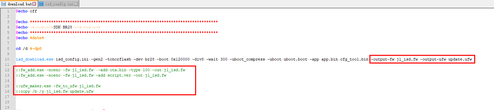

5.1. SDK Changes
If the SDK needs to support private data authorization, update the SDK as described below.
5.1.1. Updating the tools
For the SDK to support private data authorization, the related tools must be updated to the following versions (or later).
Tool |
Minimum version |
Description |
|---|---|---|
isd_download.exe |
4.2.54 |
|
1-to-2 programmer |
2.27.7 |
|
1-to-8 programmer |
3.1.22 |
5.1.2. Modifying the isd_config.ini file
Important
If isd_config.ini in the SDK you are using is generated from the isd_config_rule.c file, modify isd_config_rule.c so that it generates the configuration data
Add the following settings to the
EXTRA_CFG_PARAMsection of isd_config.ini:FLASH_SIZE: the FLASH capacity; enter the actual FLASH size of the chip used by the solution developer
PRIV_DATA_CFG_SIZE: the size occupied by the private authorization data; the configured size must be a multiple of 4KNote
[EXTRA_CFG_PARAM]
FLASH_SIZE=1M
PRIV_DATA_CFG_SIZE=4KAs shown below:

5.1.3. Modifying the download.bat file
Important
If download.bat in the SDK you are developing is generated from the download.c file, modify download.c so that it generates download.bat
Important
When private data authorization is enabled, the firmware file system format is upgraded to a new format,
which fw_add.exe/ufw_maker.exe cannot recognize.
If download.bat uses fw_add.exe/ufw_maker.exe to generate the final FW/UFW file,
delete the statements related to fw_add.exe/ufw_maker.exe from download.bat.
After deleting the statements related to fw_add.exe/ufw_maker.exe, add the -output-fw and -output-ufw parameters after isd_download.exe to generate the final FW/UFW file.
As shown below:

If the current SDK uses fw_add.exe to add files to the FW file, change it so that the files are added to the FW through isd_config.ini instead, as shown below:

Note
[FW_ADDITIONAL]
FILE_LIST=(file=ota.bin:type=100),\
(file=script.ver)